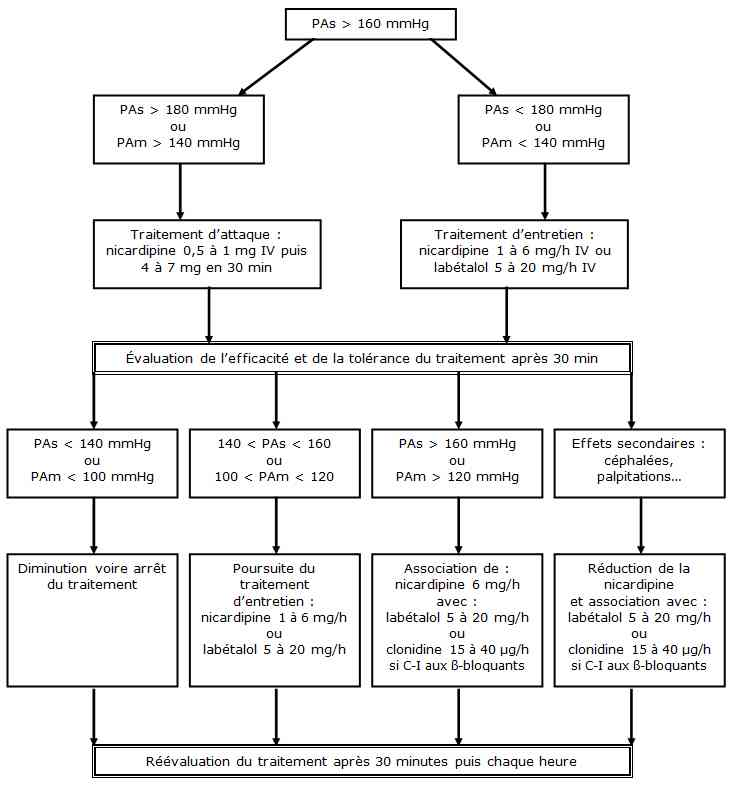

Bienvenue Sur Medical Education
Pré-éclampsie
Spécialité : gynecologie /
Points importants
-
Définition :
-
chez une femme non hypertendue avant la grossesse : apparition au delà de la 20e semaine d'aménorrhée d'une HTA avec PAS > 140 mmHg ou PAD > 90 mmHg associée à une protéinurie supérieure à 300 mg/j
-
chez une femme hypertendue connue : apparition d'une protéinurie supérieure à 300 mg/j au-delà de la 20e semaine d'aménorrhée (protéinurie absente avant ce terme)
-
Prévalence : 5 à 6% des grossesses
-
La terminologie « toxémie gravidique » est abandonnée
-
En dehors des situations relevant de la réanimation, la patiente qui présente une pré-éclampsie doit être confiée rapidement à un obstétricien
-
Formes post-partum possibles
Présentation clinique / CIMU
SIGNES FONCTIONNELS
-
Œdèmes d'apparition ou aggravation rapide
-
Dans les formes sévères : douleur épigastrique violente, nausées, phosphènes, acouphènes, hyper-réflectivité ostéotendineuse
-
Risques de souffrance foetale aiguë et d'hématome rétroplacentaire
CONTEXTE
- chez une femme non hypertendue avant la grossesse : apparition au delà de la 20e semaine d'aménorrhée d'une HTA avec PAS > 140 mmHg ou PAD > 90 mmHg associée à une protéinurie supérieure à 300 mg/j
- chez une femme hypertendue connue : apparition d'une protéinurie supérieure à 300 mg/j au-delà de la 20e semaine d'aménorrhée (protéinurie absente avant ce terme)
Présentation clinique / CIMU
SIGNES FONCTIONNELS
- Œdèmes d'apparition ou aggravation rapide
- Dans les formes sévères : douleur épigastrique violente, nausées, phosphènes, acouphènes, hyper-réflectivité ostéotendineuse
- Risques de souffrance foetale aiguë et d'hématome rétroplacentaire
CONTEXTE
Terrain
- Facteurs génétiques
- Primiparité
- Obésité
- Age maternel élevé
- Anasarque foetal...
Traitement usuel
- Clonidine éventuellement complétée de nicardipine ou labétalol
- Antécédents
- Pré-éclampsie, éclampsie (la patiente, sa mère ou une soeur)
-
Pathologies maternelles :
- ATCD de dysgravidie
- insulino-résistance
- thrombophilies
- affections auto-immunes
- HTA
- néphropathies chroniques
Facteurs de risque
- Primiparité
- Brève période d'exposition préalable au sperme du père
- Intervalle long entre deux grossesses
- Grossesse multiple
- Vie en altitude
- Stress physique ou psychologique
- Pathologies foetales : anomalies congénitales ou chromosomiques, anasarque
- Age > 40 ans
Circonstances de survenue
- Pathologie maternelle d'origine placentaire (notamment défaut d'invasion trophoblastique en début de grossesse)
EXAMEN CLINIQUE
- HTA gravidique (PAS > 140 mmHg ou PAD > 90 mmHg) avec protéinurie (> 300 mg/j)
- Pré-éclampsie sévère si PAS > 160 mmHg ou PAD > 110 mmHg ou atteinte viscérale (notamment le syndrome HELLP)
- Oedèmes
- Prise de poids
-
Recherche de signes évocateurs d'une forme sévère annonciatrice d'éclampsie :
- céphalées intenses, frontales ou en casque
- somnolence, obnubilation
- troubles sensoriels : phosphènes, acouphènes, baisse d'acuité visuelle, amaurose transitoire
- barre épigastrique ou signe de Chaussier
- nausées, vomissements
EXAMENS PARACLINIQUES SIMPLES
- Protéinurie (> 300 mg/j ou 2+)
CIMU
- Tri 2 ou 3
Signes paracliniques
BIOLOGIQUE
-
NFS, Plaquettes
-
Ionogramme sanguin, urée et créatininémie
-
Uricémie
-
Hémostase : TP, TCA et fibrinogène
-
Bilan hépatique
-
ECBU et protéinurie des 24 heures
-
Formes simples :
-
protéinurie > 300 mg/j
-
uricémie > 350 µg/L
-
transaminases augmentées
-
plaquettes < 150 G/L
-
Formes sévères :
-
protéinurie > 3,5 g/j
-
transaminases très élevées (x 3)
-
plaquettes < 100 G/L
-
créatininémie > 100 µmol/L
-
diurèse < 20 mL/h
-
hémolyse
-
CIVD
IMAGERIE
- protéinurie > 300 mg/j
- uricémie > 350 µg/L
- transaminases augmentées
- plaquettes < 150 G/L
- protéinurie > 3,5 g/j
- transaminases très élevées (x 3)
- plaquettes < 100 G/L
- créatininémie > 100 µmol/L
- diurèse < 20 mL/h
- hémolyse
- CIVD
Evaluation de la vitalité foetale
- Cardiotocographie à la recherche d'un tracé aplati ou aréactif voire des ralentissements traduisant une souffrance foetale
- Echographie obstétricale pour apprécier la croissance foetale (biométrie), le « bien être foetal » (score de Manning) et évaluer la quantité de liquide amniotique
- Doppler obstétrical permet la mesure des flux sanguins évaluant la circulation foetale et placentaire
Traitement
TRAITEMENT PREHOSPITALIER / INTRAHOSPITALIER
Stabilisation initiale
- Remplissage vasculaire : Ringer-lactate 300 à 500 mL en 30 min (pas d'albumine) avant le traitement antihypertenseur
-
Antihypertenseurs IV pour maintenir une PAD entre 90 et 105 mmHg et une PAM entre 105 et 125 mmHg :
-
si PAM > 140 mmHg :
- nicardipine (Loxen®) : bolus de 0,5 à 1mg puis 4 à 7 mg/h
- ou hydralazine (Nepressol®) : 5 mg/h
-
si PAM < 140 mmHg :
- nicardipine (Loxen®) : pas de bolus et 1 à 6 mg/h
- ou hydralazine (Nepressol®) : 1 à 3 mg/h
-
si PAM > 140 mmHg :
- Installation de la patiente en décubitus latéral préférentiellement gauche
- Oxygénation simple au masque facial (formes sévères)
- En cas de pré-éclampsie sévère, la prévention de l'éclampsie par le sulfate de magnésium est recommandée devant l'apparition de signes neurologiques (céphalées, troubles visuels, ROT polycinétiques) : bolus IV de 4 g puis 1 g/h IVSE
- En fonction du terme de la grossesse, une corticothérapie pour la maturation pulmonaire foetale doit être envisagée
Suivi du traitement
- Risque d'OAP en post-partum donc restriction hydrique et diurétiques
MEDICAMENTS
Nicardipine (Loxen®)
-
Contre indications :
- hypersensibilité connue à la nicardipine
- intolérance au fructose
- Pharmacodynamie : inhibiteur calcique sélectif à effet vasculaire
-
Posologie :
-
si PAM > 140 mmHg :
- nicardipine (Loxen®) : bolus IV de 0,5 à 1mg puis 4 à 7 mg/h
-
si PAM < 140 mmHg :
- nicardipine (Loxen®) : pas de bolus et 1 à 6 mg/h
-
si PAM > 140 mmHg :
Hydralazine (Nepressol®)
-
Contre indication :
- ATCD d'hypersensibilité à l'hydralazine
- Pharmacodynamie : vasodilatateur artériolaire, anti hypertenseur
-
Posologie :
-
si PAM > 140 mmHg :
- hydralazine (Nepressol®) : 5 mg/h
-
si PAM < 140 mmHg :
- hydralazine (Nepressol®) : 1 à 3 mg/h
-
si PAM > 140 mmHg :
Surveillance
CLINIQUE
-
Détection des signes annonciateurs d'une éclampsie (douleur épigastrique violente, nausées, phosphènes, acouphènes) :
-
surveillance PA, FC
-
surveillance FR et examen neurologique si patiente sous sulfate de magnésium
-
surveillance de la vitalité foetale
-
selon les valeurs de la PA : objectif PAM = 105 à 125 mmHg
PARACLINIQUE
-
NFS, coagulation, hémolyse, albumine, uricémie, transaminases, vitalité foetale
Devenir / orientation
CRITERES D'ADMISSION
-
En dehors d'une souffrance foetale, la patiente doit être hospitalisée selon le terme dans une maternité de type 2 (> 34SA) ou 3 (< 34SA)
CRITERES DE SORTIE
-
L'avis obstétrical est indispensable
Mécanisme / description
-
Le mécanisme n'est pas clair : c'est une pathologie maternelle d'origine placentaire (notamment défaut d'invasion trophoblastique en début de grossesse)
-
L'HTA est un symptôme d'une maladie et non sa cause, c'est un moyen d'adaptation de l'organisme maternel pour maintenir un débit utéro-placentaire correct. Le traitement antihypertenseur diminue le risque de complications maternelles mais modifie peu le pronostic foetal
Algorithme
-
Algorithme : pré-éclampsie
- surveillance PA, FC
- surveillance FR et examen neurologique si patiente sous sulfate de magnésium
- surveillance de la vitalité foetale
- selon les valeurs de la PA : objectif PAM = 105 à 125 mmHg
Devenir / orientation
CRITERES D'ADMISSION
- En dehors d'une souffrance foetale, la patiente doit être hospitalisée selon le terme dans une maternité de type 2 (> 34SA) ou 3 (< 34SA)
CRITERES DE SORTIE
- L'avis obstétrical est indispensable
Mécanisme / description
-
Le mécanisme n'est pas clair : c'est une pathologie maternelle d'origine placentaire (notamment défaut d'invasion trophoblastique en début de grossesse)
-
L'HTA est un symptôme d'une maladie et non sa cause, c'est un moyen d'adaptation de l'organisme maternel pour maintenir un débit utéro-placentaire correct. Le traitement antihypertenseur diminue le risque de complications maternelles mais modifie peu le pronostic foetal
Algorithme
-
Algorithme : pré-éclampsie
Algorithme
- Algorithme : pré-éclampsie
 _800 Algorithme Algorithme : pré éclampsie
Bibliographie
-
Société Française d'Anesthésie Réanimation. Conférence d'experts : Réanimation des formes graves de pré-éclampsie. 2000
-
Moignet C, Diemunsch P, Pottecher T. Anesthésie réanimation et pré-éclampsie. Congrès SFAR 2003
-
Recommandations formalisées d’experts SFAR-SFMU : urgences obstétricales extrahospitalières, 2010
Auteur(s) : Gilles BAGOU